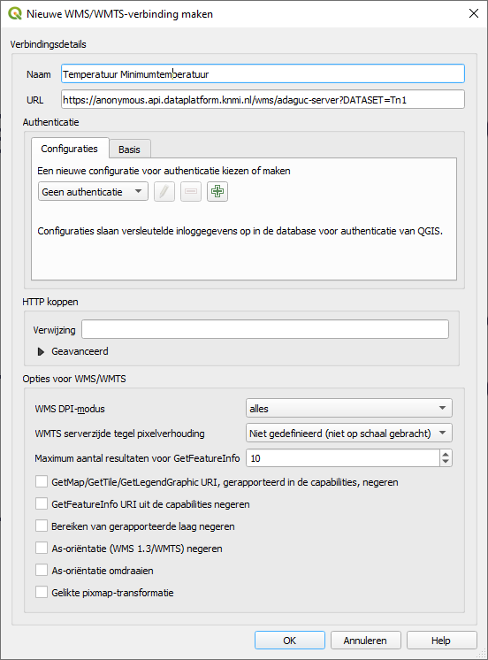
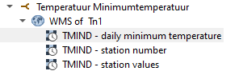
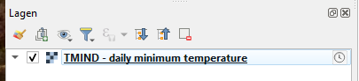
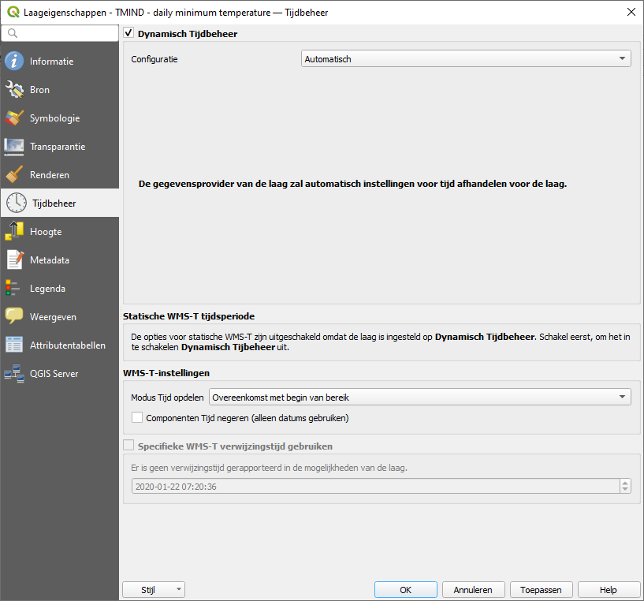
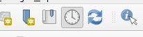
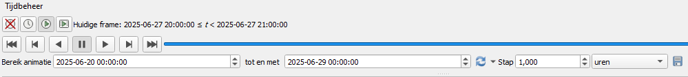

## Intro Staan [eens] / zitten [oneens] -- Wie is bekend met PDOK? -- Wie komt er op het Geoforum? -- Wie is opgeleid als GISser? -- Wie is data-eigenaar (= beheert een geodataset)? -- Wie is service provider (= maakt geodata via geoservices beschikbaar)? -- Wie is data-gebruiker van geoservices? -- Wie heeft kennis gemaakt met OGC API Features? -- Wie is er eigenaar van geodata (die ontsloten wordt)? -- Wie heeft zich recent verbaasd? -- Wie heeft er recent iets geleerd op het gebied van OGC APIs? -- Wie heeft er specifieke vragen rond ons onderwerp?
Ontwikkelpad OGC APIs ### Stellingen -- Een API is voor machines. -- Een OGC API moet alleen GeoJSON uitserveren en geen GML. -- Een request op een feature collection moet een feature count (en aantal paginas) terug geven. -- Een API moet altijd dezelfde volgorde teruggeven van resultaten voor dezelfde query. -- En URLs moeten altijd volgbaar blijven, ook na dataupdates. -- Een serviceprovider mag andere feature IDs introduceren dan gebruikelijk zijn in het data domein. -- Ik moet iedere vraag (set van filters) aan een OGC API kunnen stellen. [Geoforum topic](https://geoforum.nl/t/wfs-request-met-lang-filter-geeft-foutmelding/7523) -- OGC API Features zijn niet bedoeld als (bulk)downloadservice. --- Ontwikkelpad OGC APIs ### Opdrachten In groepjes van 4 https://github.com/RoelvandenBerg/FOSS4G2025 -- Ontwikkelpad OGC APIs #### Opdracht 1: - Bedenk queries met een relevante usecase die meer dan 10.000 records opleveren voor een OGC API Features. Beschikbare OGC APIs zijn te vinden op https://api.pdok.nl/. - Voer deze query uit met een GIS client naar keuze. : zoek een stukje in een van onze OGC APIs die over de grens van 10.000 features heen gaan. -- Verbinden met een OGC API Features in QGIS: 1. **Zoek de API endpoint:** Zoek de root URL van de OGC API Features service die je wilt gebruiken. 2. **Open QGIS:** Start QGIS en ga naar "Laag" `>` "Laag toevoegen" `>` WFS -OGC API feature laag toevoegen. 3. **Voeg de URL toe:** Klik op nieuw. 4. **Geef verbinding een naam** Plak de URL van de OGC API Features service in het "URL" veld. Druk op OK. 5. **Verbinden:** Selecteer nieuwe verbiningen en Klik op "Verbinden" en QGIS zal proberen de gegevens op te halen. -- Verbinden met een OGC API Features in QGIS: 6. **Selecteer de feature collectie:** Als de verbinding succesvol is, kun je de gewenste feature collectie selecteren in het dialoogvenster. 7. **Voeg toe aan kaart:** Klik op "Toevoegen" om de feature collectie aan je kaart toe te voegen. 8. **Zoom in naar juiste niveau om features te zien.** 9. _Voor PDOK OGC APIs en achtergrondkaarten:_ **Instaleer en Gebruik PDOK plugin** ( https://plugins.qgis.org/plugins/pdokservicesplugin/) -- Ontwikkelpad OGC APIs #### Opdracht 2: Download meer dan 1.000 records met een client naar keuze: - QGIS: kijk welke calls QGIS doet (`F12` in QGIS geeft toegang tot de logs). - Verdieping: met `ogr2ogr`: download meer dan 1.000 records met ogr2ogr. -- Ontwikkelpad OGC APIs #### Opdracht 3 (gevorderden): - Download met `ogr2ogr` meer dan 1.000 records met ogr2ogr. Of creer een geopackage met bijvoorbeeld QGIS (vorige opdracht) - Voer SQL Query uit en pagineer met een `LIMIT` en een `OFFSET` van `100` records per keer. - Hoeveel werk doet de database bij de 10e pagina t.o.v. de 1e pagina en waarom? --- Ontwikkelpad OGC APIs ### Invulling PDOK -- Ontwikkelpad OGC APIs ### Invulling PDOK - GeoJSON - Paginering - OGC APIs benaderen bulkdownloadservice (bij simpele queries) - Deeplinkbare URLs -- ### Invulling PDOK Offset paginering ```sql SELECT * FROM {table} ORDER BY id OFFSET {skip} ROWS FETCH NEXT {limit} ROWS ONLY; ``` _versus_ Cursor paginering ```sql SELECT * FROM {table} WHERE cursor_id > {next_token} ORDER BY cursor_id FETCH NEXT {limit} ROWS ONLY; ```
Omgang met tijd in OGC APIs ### Stellingen -- Geodata heeft altijd een temporeel aspect. -- Historie van geodata is altijd relevant. -- OGC APIs moeten UTC uitserveren. -- Een jaarattribuut is temporele data en moet (ook) als datumattribuut worden opgenomen in de data. -- Een OGC API zou zonder filters de actuele situatie van temporele geodata moeten teruggeven. --- Omgang met tijd in OGC APIs ### Opdrachten -- Omgang met tijd in OGC APIs #### Opdracht 1: - Laad een temporele WMS van het KNMI van de [Minimum temperatuur van 1 dag](https://anonymous.api.dataplatform.knmi.nl/wms/adaguc-server?DATASET=Tn1) in in QGIS en stap hier doorheen in de tijd. - Vergelijk deze met de [Neerslagradar forecast](https://anonymous.api.dataplatform.knmi.nl/wms/adaguc-server?DATASET=radar_forecast) -- Maak een configuratie aan naar een temporele WMS (voorbeeld met QGIS 3.40.5): https://anonymous.api.dataplatform.knmi.nl/wms/adaguc-server?DATASET=Tn1  -- Selecteer de juiste laag:  Bij het inladen is een klokje zichtbaar  -- Zo niet kies dan de juiste instelling bij Tijdbeheer laag:  -- Je kan nu tijdbeheer inschakelen middels het klokje op het lint bovenin:  Hiermee is nu door de temporele data heen te lopen:  -- Omgang met tijd in OGC APIs #### Opdracht 2: - Ga naar de wegdelen collectie van de OGC API Features [van de BGT](https://api.pdok.nl/lv/bgt/ogc/v1/collections/wegdeel) en zoek een bepaalde plek wegdelen zonder temporeel te filteren. - Doe het zelfde en zoek nu wegdelen op een bepaald moment in de tijd. - Laadt de zelfde data in QGIS in en zoek een manier om door deze data temporeel heen te lopen zoals bij de KNMI data. --- Omgang met tijd in OGC APIs ### Invulling PDOK -- Omgang met tijd in OGC APIs ### Invulling PDOK - Temporele collecties waar relevant, mits aangeleverd. - UTC implementeren. - Tijdsreizen via filters.
Omgang met standaardisatie ### Stellingen -- Een API moet rekening houden met client implementaties. -- OGC APIs mogen zich alleen baseren op wat in de standaard is vastgelegd. -- Een productie OGC API mag geen draft OGC standaarden implementeren. -- OGC APIs zijn alleen voor Geodata. -- OGC API serveert GeoJSON altijd uit in CRS84 en niet in RD. -- OGC API serveert GeoJSON uit met `crs` veld. -- Het datadomein (niet het brede geodomein) bepaald de naamgevingsconventies. -- Data moet altijd as-is uitgeserveerd worden, zoals het gemodelleerd is. --- Omgang met standaardisatie ### Opdrachten In groepjes van 4 -- Omgang met standaardisatie #### Opdracht 1a: - Zoek de naamgevingsconventie van APIs voor overheids APIs. [Antwoord](https://gitdocumentatie.logius.nl/publicatie/api/adr/2.0.2/#resources) - Zoek de naamgevingsconventie van tabellen in Postgres ([antwoord (zie TIP)](https://www.postgresql.org/docs/17/ddl-basics.html#DDL-BASICS)). - Zoek (max 1 minuut) een specificatie van REST ([antwoord](https://ics.uci.edu/~fielding/pubs/dissertation/rest_arch_style.htm#sec_5_2_1_1)). - Hoe wordt er in bovenstaande specificaties en stijlen omgegaan met meervoud en enkelvoud? -- Omgang met standaardisatie #### Opdracht 1B: - Voldoet de [Straatmeubilair BGT collectie](https://api.pdok.nl/lv/bgt/ogc/v1/collections/straatmeubilair) aan de naamgevingsconventies? - Geef een advies aan PDOK hoe hier mee om te gaan. -- Omgang met standaardisatie #### Opdracht 2: - Vraag geodata met andere CRS op in QGIS dan CRS84. - Hoe gaat QGIS hiermee om? --- Standaardisatie ### Invulling PDOK -- Omgang met standaardisatie ### Invulling PDOK - Juiste verwachtingen - Standaarden leidend - Verwantwoordelijkheid clientimplementaties - Poging net ophalen via [Geoforum](https://geoforum.nl/t/input-van-afnemers-over-ogc-api-s-van-pdok-gevraagd-historie-en-geometrieen/9394)